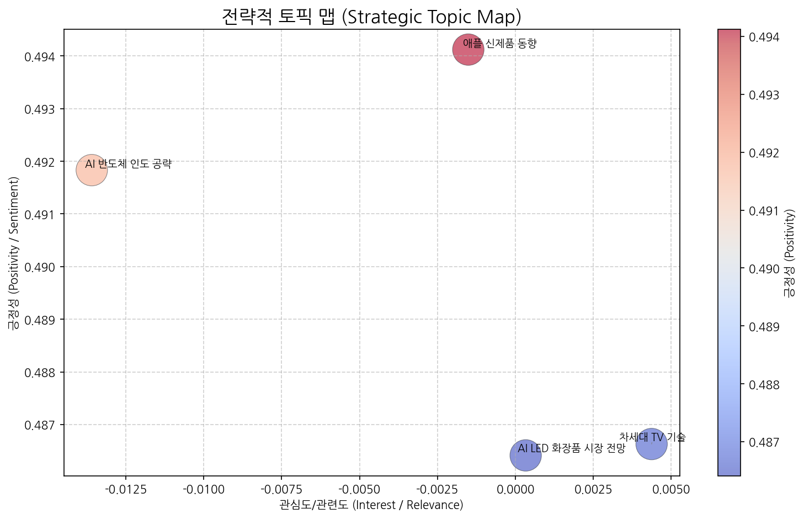
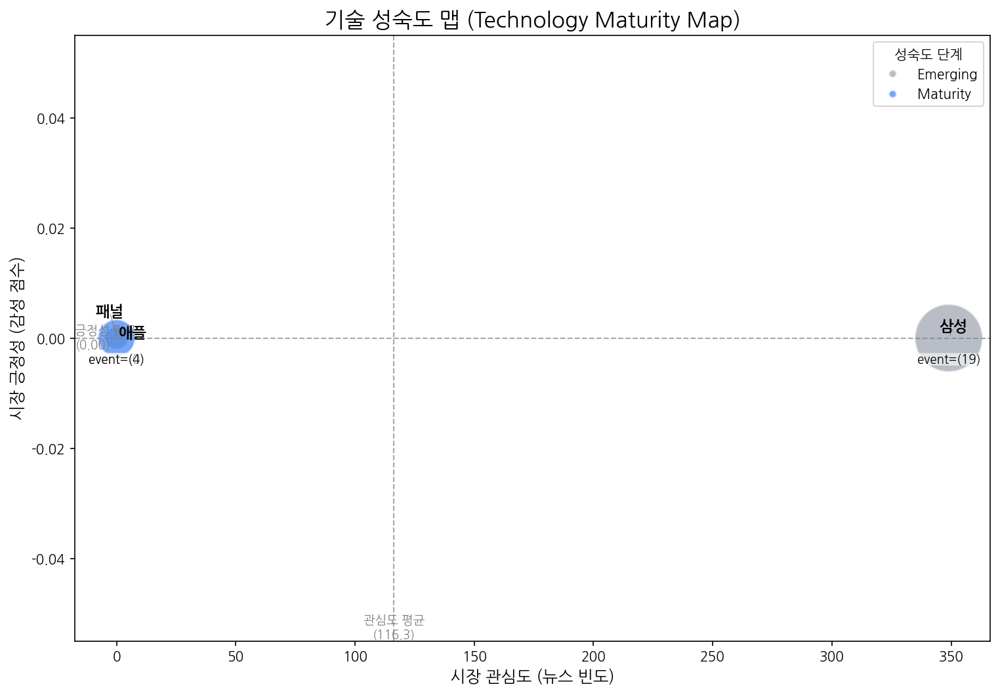
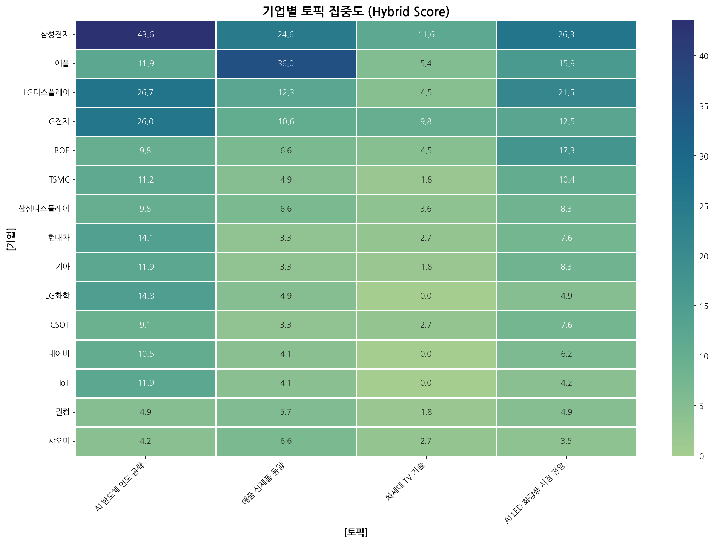
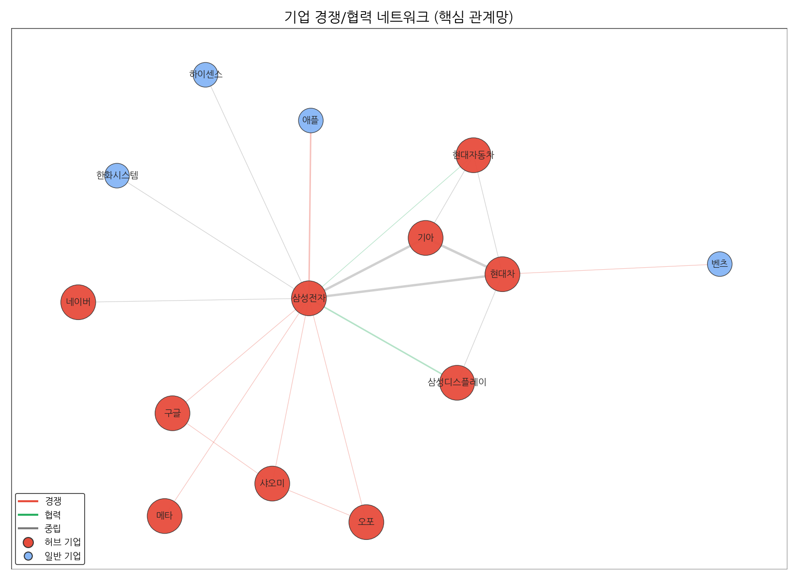
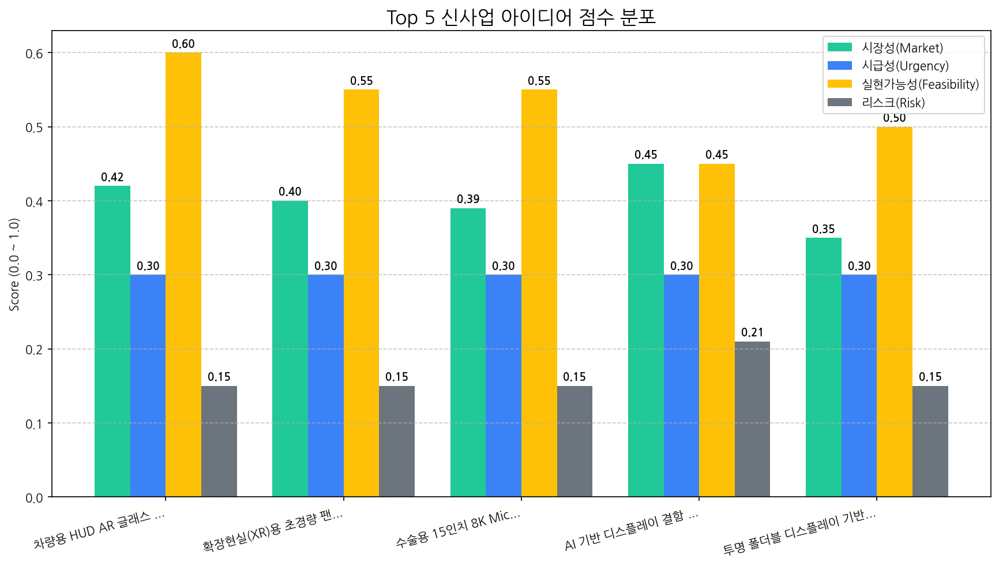

| 토픽명 | 요약 | 핵심 키워드 | |:-----------------|:----------------------------------------------------------------------------------------------------------------|:---------------| | AI 반도체 인도 공략 | 삼성전자를 비롯한 기술 기업들이 AI, 반도체, 전기차 기술을 바탕으로 인도 시장에서 사업 확장 및 브랜드 강화를 추진하며, 특히 패션 등 다양한 분야에서 AI 기술을 활용하는 전략을 모색하는 내용. | 기술, ai, 반도체 | | 애플 신제품 동향 | 애플의 새로운 맥북 프로, 비전, M5 칩, 폴더블 기기 출시 가능성, AI 기술 적용, 그리고 터치 인터페이스 관련 소식을 다루는 내용입니다. | 프로, 맥북, 애플 | | 차세대 TV 기술 | OLED, QLED, 마이크로 LED 등 차세대 TV 디스플레이 기술과 관련된 뉴스이며, RGB, 프레임, 화질, 투명 디스플레이 등 관련 기술 요소 및 혁신을 다루고 있습니다. | 올레드, qled, rgb | | AI LED 화장품 시장 전망 | AI 기술을 활용한 LED 디스플레이와 화장품 판매 동향, 특히 미국과 중국 시장을 중심으로 전주 LED 전망을 포함한 시장 전반의 흐름을 분석하는 뉴스입니다. | ai, 동기, 디스플레이 |
| 기술 | 단계 | 판단 근거 | |:-----|:---------|:---------------------------------------------------------------------| | 패널 | Emerging | 뉴스 언급, 시장 감성, 주요 이벤트 발생이 모두 극히 저조하여 시장 관심과 활동이 미미한 초기 단계로 판단됩니다. | | 삼성 | Emerging | 낮은 시장 감성 점수와 투자 및 출시 이벤트만 발생한 것으로 보아 시장의 관심은 높으나 아직 성장 초기 단계로 판단됩니다. | | 애플 | Maturity | 뉴스 언급 빈도와 시장 감성 점수가 낮고, 출시 외 투자 및 수주 이벤트가 없어 성숙기에 접어든 것으로 판단됩니다. |
| org | topic_0 | topic_1 | topic_2 | topic_3 |
|---|---|---|---|---|
| ASUS | 2.11 (1%) | 2.46 (1%) | 2.68 (3%) | 0.69 (0%) |
| AUO | 1.41 (0%) | 2.46 (1%) | 1.79 (2%) | 4.16 (2%) |
| BMW | 1.41 (0%) | nan | nan | 0.69 (0%) |
| BOE | 9.84 (3%) | 6.55 (3%) | 4.47 (5%) | 17.33 (8%) |
| BYD | 1.41 (0%) | nan | 0.89 (1%) | 1.39 (1%) |

| source | target | weight | rel_type |
|---|---|---|---|
| 기아 | 현대차 | 5 | neutral |
| 삼성전자 | 현대차 | 4 | neutral |
| 기아 | 삼성전자 | 4 | neutral |
| 삼성전자 | 애플 | 3 | rivalry |
| 삼성디스플레이 | 삼성전자 | 3 | partnership |
| Date | Topic | sentiment_drop | impact_range | summary | mitigation |
|---|---|---|---|---|---|
| 2025-10-19 | OLED_Topic | 0.109 | 중기/PR | OLED 기술의 한계와 관련된 부정적 내용이 보도되었습니다. 특히, 고해상도 구현 시 전력 소모, 수명, 발열 문제와 풀컬러 구현 기술의 미성숙이 지적되었습니다. | OLED 기술의 단점을 보완하기 위한 연구 개발 투자 확대가 필요합니다. 동시에, OLED 기술의 장점과 개선 노력을 적극적으로 홍보하여 부정적 인식을 완화해야 합니다. |

| 아이디어 | 가치 제안 | 총점 | |:----------------------------------|:-----------------------------------------------------------------------------------------|-----:| | 차량용 HUD AR 글래스 일체형 디스플레이 | 넓은 시야각과 고해상도 AR 정보 제공으로 운전 몰입도 및 안전성 향상, 운전자 맞춤형 정보 제공, 차량 디자인 통합 용이성 | 3.6 | | 확장현실(XR)용 초경량 팬케이크 렌즈 모듈 | 초경량, 초소형 디자인으로 XR 기기 착용감 개선, 고화질 영상 제공으로 몰입감 향상, 다양한 XR 기기 디자인 적용 가능 | 3.4 | | 수술용 15인치 8K MicroLED 무안경 3D 디스플레이 | 압도적인 해상도와 무안경 3D 기술로 수술 시야 확보 및 공간 인식 능력 향상, AI 기반 영상 분석 및 증강현실 정보 제공, 수술 시간 단축 및 정확도 향상 | 3.4 | | AI 기반 디스플레이 결함 예측 및 분석 서비스 | AI 기반 실시간 결함 예측 및 분석, 결함 발생 원인 자동 분석 및 개선 방안 제시, 수율 향상 및 생산 비용 절감 | 3.2 | | 투명 폴더블 디스플레이 기반 스마트 윈도우 | 투명도 조절, 정보 표시, 에너지 절감 기능 통합, 폴더블 디자인으로 공간 활용도 극대화, 건물 외관 디자인 차별화 | 3.2 || Hypothesis | Target | KPI | Owner | Due |
|---|---|---|---|---|
| 글로벌 완성차 OEM들은 넓은 시야각과 고해상도 AR 정보를 제공하는 차량용 HUD AR 글래스 일체형 디스플레이에 경쟁사 대비 20% 높은 가격을 지불할 의향이 있다. | BMW, Mercedes-Benz, Tesla의 HUD 시스템 개발 및 구매 담당자 | 3개 OEM 중 2개 이상의 기업으로부터 제품 개발 및 협업에 대한 NDA 체결 및 LOI 확보 | 사업개발팀 | 2025-11-02 |
| 운전자 시선 추적 및 AR 정보 자동 조정 기술이 적용된 차량용 HUD AR 글래스 일체형 디스플레이는 기존 HUD 대비 운전자의 인지 반응 속도를 15% 향상시킨다. | 자사 내 운전 시뮬레이터 및 VR 환경 구축, 피실험자 20명 (운전 경력 5년 이상) | 피실험자 20명 중 15명 이상이 AR 글래스 일체형 HUD 환경에서 인지 반응 속도 15% 향상 및 안전성 개선에 대한 설문 결과 4점(5점 만점) 이상 평가 | 기술기획팀 | 2025-11-02 |
| 고휘도, 고투과율 AR 글래스용 디스플레이 패널의 시제품 제작 비용이 목표 단가(기존 HUD 패널 대비 2배) 이내로 양산 가능하며, 목표 수율(85%) 달성이 가능하다. | AR 글래스용 디스플레이 패널 시제품 제작 및 성능 테스트 (휘도, 투과율, 시야각, 해상도 측정) | 시제품 제작 비용이 목표 단가 이내이며, 목표 수율 85% 이상 달성 및 성능 테스트 결과 목표 스펙 충족 (휘도 5,000nit 이상, 투과율 80% 이상, 시야각 30도 이상, 해상도 4K 이상) | 기술개발팀 | 2025-11-02 |